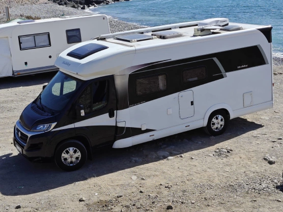

Dostępne
Kamper
Nasz kamper to komfortowy dom na kołach gotowy na każdą trasę - od nadmorskich kempingów po górskie serpentyny. W pełni wyposażony, zadbany i regularnie serwisowany, żebyś mógł skupić się wyłącznie na podróży.
- Kuchnia z lodówką
- Miejsca do spania
- Toaleta
- Ogrzewanie
- Zbiornik wody
- Pełne wyposażenie kuchenne
od
120 € / doba
Rezerwuj →